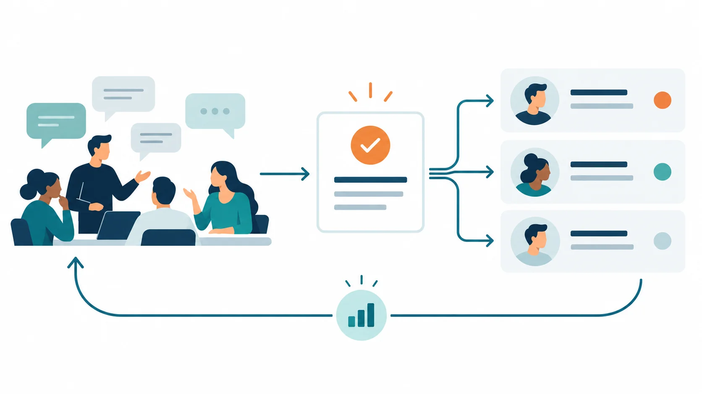

Article · 飞函
Article · 飞函
临时拉会后，如何让会议结论接上后续任务
研发、测试和业务同事临时拉会，十几分钟就定下了处理方向。第二天执行时，有人记得“先修复”，有人记得“先验证”；会议聊天里虽有讨论，却没人能指出哪一句是最终结论。会议开得快，交接却在会后断了。
问题通常不在于少了一份长篇纪要，而在于讨论、决定和行动混在一起。后来加入的同事要翻找聊天记录，负责人则可能依据不同版本的口头理解推进。团队需要约定：会议聊天承接现场信息，结论单独确认，任务再交给明确的人。
会中：把讨论留在原处，把决定说清楚
临时会议可以继续用于快速澄清问题。主持人或指定记录人应在会中区分三类内容：已确认的决定、仍需验证的疑点、会后要做的事。临近散会时，用一句话复述每项决定，并请相关负责人当场确认；尚未达成一致的内容标为“待确认”，不要写成结论。
飞函视频会议提供快速拉会和会议聊天，适合承接讨论中的补充信息。但会议聊天不应成为唯一的交接入口：参会人可能错过某段对话，执行人也未必都在会上。
会后：发出一条能直接执行的结论消息
散会后，由记录人把结论发到项目群或相关工作群，保持固定格式：决定是什么、依据或待确认点是什么、谁负责、何时反馈、交付物放在哪里。例如：“本次先验证登录异常是否由配置变更引起；测试负责人今天下班前反馈复现结果；研发负责人收到结果后决定修复方案。配置清单见共享文件。”如果文件涉及权限，再按参与范围设置访问权限。
这条消息要明确标注为“会议结论”，并请任务负责人回复确认。若后续判断改变，应在同一工作群补发更新，写明替代了哪项决定，避免新旧说法同时流转。飞函即时通讯提供历史消息同步和全局搜索，可帮助成员回看上下文；结论是否可靠，仍取决于团队是否把最终版本写明白。

交接：检查任务是否真的有人接住
任务交接不能止于“已发送”。负责人确认后，要能回答三个问题：下一步做什么、遇到阻塞找谁、结果回到哪里。跨部门任务尤其需要指定一个汇总人，避免每个小组只更新自己的聊天窗口。到了约定时间，汇总人对照结论消息检查状态；未完成的事项说明阻塞和下一次反馈时间。
团队可以先用一次临时会议试行这套做法：会中确认决定，会后发一条结论消息，任务负责人逐项认领，再在原工作群回报结果。这样，会议聊天保留讨论过程，结论消息承担交接责任，后续成员也能从明确的入口继续工作。